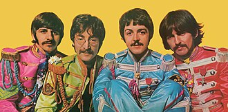
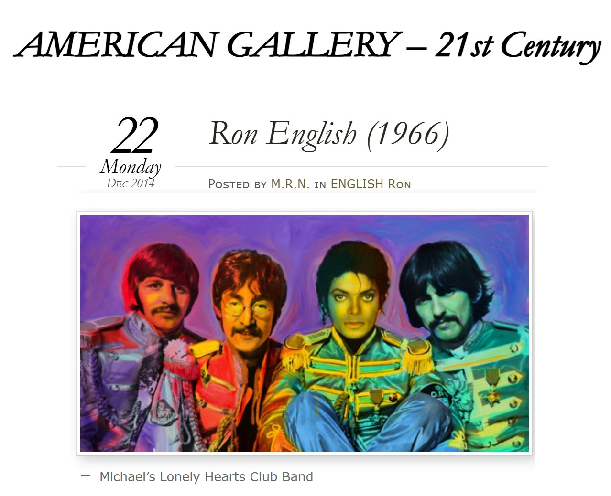

Exhibitions
Mojo Voodoo / Heavy Metal Muzick, Red Truck Gallery, New Orleans, Louisiana, US, opened May 24, 2019.
Mojo Voodoo / Heavy Metal Muzick, Red Truck Gallery, New Orleans, Louisiana, US, opened May 24, 2019.
Literature
Pablo González, “Ron English: el hiperrealista al que McDonald’s odiaba,” MalaTinta Magazine, February 17, 2014. Online: MalaTinta Magazine.
Notes
This composition was later reproduced by the artist as a limited-edition print in the Vinyl Chord: A Revolutionary Record Store series.
Ancillary Documentation





